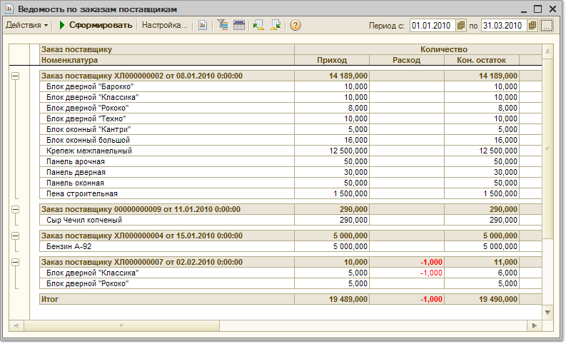

Меню Отчеты > Закупки > Анализ заказов > Ведомость по заказам поставщикам
В отчете показывается информация по выполнению заказов поставщиками за определенный период в части поступления товаров.
Параметры формирования отчета
Показатели
В отчете выводятся как количественные показатели: количество заказанного и полученного товара в базовых единицах измерения и в единицах хранения остатков, так и стоимостные показатели: стоимость в валюте управленческого учета и стоимость в валюте взаиморасчетов по договору, который указан в документе "Заказ поставщику".
Группировки строк и колонок
Отчет может быть сгруппирован по менеджерам, ответственным за выполнение заказа. В качестве менеджера указывается тот пользователь, который выбран в качестве ответственного в документе "Заказ поставщику".
Для установки группировки по менеджерам необходимо в список группировок добавить поле "Заказ поставщику. Ответственный
Отчет может быть также сгруппирован по статусам партии, чтобы узнать сколько товаров получено от поставщиков и сколько товара получено на комиссию от комитентов.
В отчете также предусмотрены группировки по дням, неделям, месяцам и т.д.
Информация в отчете
